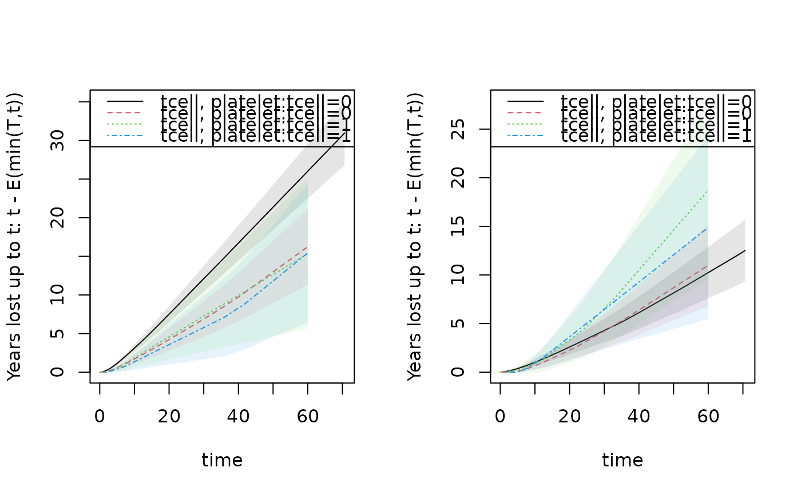
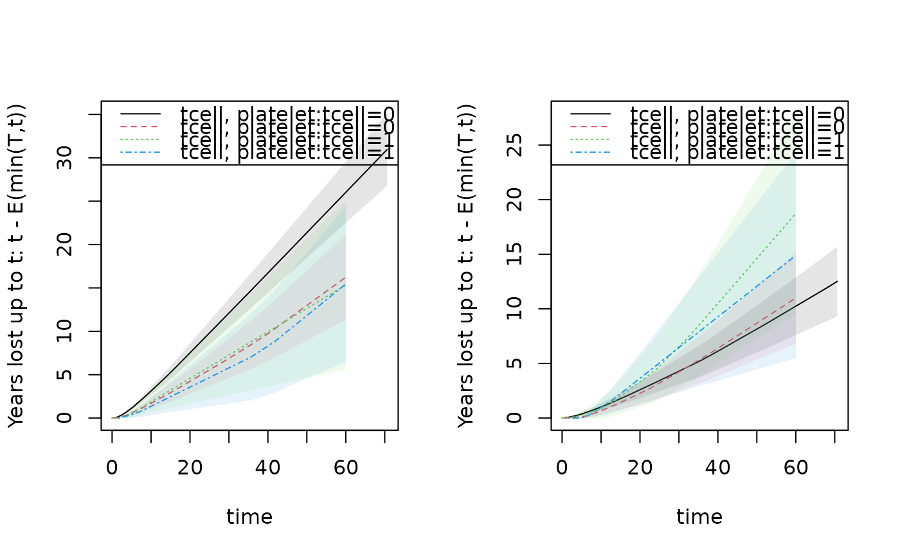

Restricted mean for stratified Kaplan-Meier or Cox model with martingale standard errors
Source:R/phreg.R
resmean.phreg.RdRestricted mean for stratified Kaplan-Meier or stratified Cox with martingale standard error. Standard error is computed using linear interpolation between standard errors at jump-times. Plots gives restricted mean at all times. Years lost can be computed based on this and decomposed into years lost for different causes using the cif.yearslost function that is based on integrating the cumulative incidence functions. One particular feature of these functions are that the restricted mean and years-lost are computed for all event times as functions and can be plotted/viewed. When times are given and beyond the last event time withn a strata the curves are extrapolated using the estimates of cumulative incidence.
Examples
library(mets)
data(bmt); bmt$time <- bmt$time+runif(408)*0.001
out1 <- phreg(Surv(time,cause!=0)~strata(tcell,platelet),data=bmt)
rm1 <- resmean.phreg(out1,times=10*(1:6))
summary(rm1)
#> strata times rmean se.rmean lower upper
#> tcell.0..platelet.0 0 10 5.863334 0.2565972 5.381378 6.388454
#> tcell.0..platelet.1 1 10 7.631962 0.3423844 6.989557 8.333409
#> tcell.1..platelet.0 2 10 7.277547 0.7092878 6.012081 8.809378
#> tcell.1..platelet.1 3 10 7.670151 0.5624447 6.643335 8.855675
#> tcell.0..platelet.0.1 0 20 9.888950 0.5393859 8.886321 11.004704
#> tcell.0..platelet.1.1 1 20 13.506451 0.8000225 12.026032 15.169111
#> tcell.1..platelet.0.1 2 20 12.102974 1.5545669 9.409347 15.567709
#> tcell.1..platelet.1.1 3 20 12.787703 1.4675824 10.211846 16.013298
#> tcell.0..platelet.0.2 0 30 13.602941 0.8315422 12.066997 15.334387
#> tcell.0..platelet.1.2 1 30 18.901103 1.2693108 16.570072 21.560058
#> tcell.1..platelet.0.2 2 30 16.191150 2.4006235 12.107990 21.651268
#> tcell.1..platelet.1.2 3 30 17.766058 2.4422068 13.570032 23.259549
#> tcell.0..platelet.0.3 0 40 17.159947 1.1235964 15.093192 19.509708
#> tcell.0..platelet.1.3 1 40 23.880230 1.7372347 20.706917 27.539849
#> tcell.1..platelet.0.3 2 40 19.549194 3.2030958 14.179509 26.952342
#> tcell.1..platelet.1.3 3 40 22.433326 3.3838505 16.691606 30.150130
#> tcell.0..platelet.0.4 0 50 20.482456 1.4110537 17.895426 23.443477
#> tcell.0..platelet.1.4 1 50 28.324342 2.1962403 24.330921 32.973202
#> tcell.1..platelet.0.4 2 50 22.745997 4.0537112 16.040092 32.255450
#> tcell.1..platelet.1.4 3 50 26.115635 4.2306912 19.011102 35.875163
#> tcell.0..platelet.0.5 0 60 23.741470 1.7038104 20.626283 27.327142
#> tcell.0..platelet.1.5 1 60 32.761949 2.6868298 27.897296 38.474886
#> tcell.1..platelet.0.5 2 60 25.942800 4.9476052 17.851818 37.700861
#> tcell.1..platelet.1.5 3 60 29.671603 5.1599206 21.101641 41.722064
#> years.lost
#> tcell.0..platelet.0 4.136666
#> tcell.0..platelet.1 2.368038
#> tcell.1..platelet.0 2.722453
#> tcell.1..platelet.1 2.329849
#> tcell.0..platelet.0.1 10.111050
#> tcell.0..platelet.1.1 6.493549
#> tcell.1..platelet.0.1 7.897026
#> tcell.1..platelet.1.1 7.212297
#> tcell.0..platelet.0.2 16.397059
#> tcell.0..platelet.1.2 11.098897
#> tcell.1..platelet.0.2 13.808850
#> tcell.1..platelet.1.2 12.233942
#> tcell.0..platelet.0.3 22.840053
#> tcell.0..platelet.1.3 16.119770
#> tcell.1..platelet.0.3 20.450806
#> tcell.1..platelet.1.3 17.566674
#> tcell.0..platelet.0.4 29.517544
#> tcell.0..platelet.1.4 21.675658
#> tcell.1..platelet.0.4 27.254003
#> tcell.1..platelet.1.4 23.884365
#> tcell.0..platelet.0.5 36.258530
#> tcell.0..platelet.1.5 27.238051
#> tcell.1..platelet.0.5 34.057200
#> tcell.1..platelet.1.5 30.328397
par(mfrow=c(1,2))
plot(rm1,se=1)
plot(rm1,years.lost=TRUE,se=1)
 ## comparing populations, can also be done using rmstIPCW via influence functions
rm1 <- resmean.phreg(out1,times=40)
e1 <- estimate(rm1)
e1
#> Estimate Std.Err 2.5% 97.5% P-value
#> p1 17.16 1.124 14.96 19.36 1.169e-52
#> p2 23.88 1.737 20.48 27.29 5.374e-43
#> p3 19.55 3.203 13.27 25.83 1.040e-09
#> p4 22.43 3.384 15.80 29.07 3.368e-11
estimate(e1,rbind(c(1,-1,0,0)))
#> Estimate Std.Err 2.5% 97.5% P-value
#> [p1] - [p2] -6.72 2.069 -10.78 -2.665 0.001161
#>
#> Null Hypothesis:
#> [p1] - [p2] = 0
## years.lost decomposed into causes
drm1 <- cif.yearslost(Event(time,cause)~strata(tcell,platelet),data=bmt,times=10*(1:6))
par(mfrow=c(1,2)); plot(drm1,cause=1,se=1); plot(drm1,cause=2,se=1);

summary(drm1)
#> $estimate
#> strata times intF_1 intF_2 se.intF_1 se.intF_2
#> tcell.0..platelet.0 0 10 3.117736 1.0189303 0.2487181 0.1703638
#> tcell.0..platelet.1 1 10 1.710919 0.6571189 0.3238389 0.1870534
#> tcell.1..platelet.0 2 10 1.876128 0.8463247 0.6339008 0.4726505
#> tcell.1..platelet.1 3 10 1.358619 0.9712306 0.5303101 0.3617258
#> tcell.0..platelet.0.1 0 20 7.517574 2.5934760 0.5441141 0.3861258
#> tcell.0..platelet.1.1 1 20 4.230933 2.2626159 0.7414077 0.5327563
#> tcell.1..platelet.0.1 2 20 4.568436 3.3285906 1.4876734 1.1718504
#> tcell.1..platelet.1.1 3 20 3.569503 3.6427943 1.3003048 1.1906650
#> tcell.0..platelet.0.2 0 30 12.105137 4.2919222 0.8508109 0.6161432
#> tcell.0..platelet.1.2 1 30 6.884351 4.2145454 1.1740900 0.9057005
#> tcell.1..platelet.0.2 2 30 7.260743 6.5481063 2.3532831 1.9703533
#> tcell.1..platelet.1.2 3 30 5.780387 6.4535549 2.0925023 2.0815282
#> tcell.0..platelet.0.3 0 40 16.718644 6.1214091 1.1626282 0.8509973
#> tcell.0..platelet.1.3 1 40 9.731560 6.3882101 1.6095851 1.2998270
#> tcell.1..platelet.0.3 2 40 9.953051 10.4977551 3.2212013 2.8144216
#> tcell.1..platelet.1.3 3 40 8.302359 9.2643156 2.8717953 2.9840956
#> tcell.0..platelet.0.4 0 50 21.367828 8.1497159 1.4766465 1.0945192
#> tcell.0..platelet.1.4 1 50 12.985924 8.6897341 2.0479350 1.7124152
#> tcell.1..platelet.0.4 2 50 12.645359 14.6086442 4.0899587 3.7302723
#> tcell.1..platelet.1.4 3 50 11.809289 12.0750763 3.6736823 3.8902292
#> tcell.0..platelet.0.5 0 60 26.017013 10.2415177 1.7930408 1.3471502
#> tcell.0..platelet.1.5 1 60 16.246793 10.9912582 2.5105732 2.1389316
#> tcell.1..platelet.0.5 2 60 15.337666 18.7195333 4.9591142 4.6873951
#> tcell.1..platelet.1.5 3 60 15.442561 14.8858369 4.5899564 4.7979091
#> total.years.lost lower_intF_1 upper_intF_1 lower_intF_2
#> tcell.0..platelet.0 4.136666 2.6664563 3.645391 0.7342174
#> tcell.0..platelet.1 2.368038 1.1806362 2.479380 0.3761349
#> tcell.1..platelet.0 2.722453 0.9675221 3.638011 0.2832454
#> tcell.1..platelet.1 2.329849 0.6321902 2.919761 0.4680587
#> tcell.0..platelet.0.1 10.111050 6.5233192 8.663368 1.9371014
#> tcell.0..platelet.1.1 6.493549 3.0010682 5.964809 1.4262203
#> tcell.1..platelet.0.1 7.897026 2.4131302 8.648768 1.6695128
#> tcell.1..platelet.1.1 7.212297 1.7479562 7.289285 1.9196201
#> tcell.0..platelet.0.2 16.397059 10.5473388 13.893015 3.2393239
#> tcell.0..platelet.1.2 11.098897 4.9282764 9.616809 2.7658498
#> tcell.1..platelet.0.2 13.808850 3.8467834 13.704539 3.6306595
#> tcell.1..platelet.1.2 12.233942 2.8432933 11.751470 3.4296725
#> tcell.0..platelet.0.3 22.840053 14.5884048 19.159947 4.6614122
#> tcell.0..platelet.1.3 16.119770 7.0371214 13.457671 4.2872897
#> tcell.1..platelet.0.3 20.450806 5.2780526 18.768897 6.2071388
#> tcell.1..platelet.1.3 17.566674 4.2147313 16.354342 4.9276047
#> tcell.0..platelet.0.4 29.517544 18.6610984 24.467161 6.2636115
#> tcell.0..platelet.1.4 21.675658 9.5331137 17.689311 5.9056422
#> tcell.1..platelet.0.4 27.254003 6.7084519 23.836364 8.8564203
#> tcell.1..platelet.1.4 23.884365 6.4184249 21.727964 6.4218203
#> tcell.0..platelet.0.5 36.258530 22.7297317 29.779716 7.9140511
#> tcell.0..platelet.1.5 27.238051 12.0014512 21.993864 7.5058702
#> tcell.1..platelet.0.5 34.057200 8.1384377 28.905303 11.4591673
#> tcell.1..platelet.1.5 30.328397 8.6241967 27.651581 7.9144246
#> upper_intF_2
#> tcell.0..platelet.0 1.414048
#> tcell.0..platelet.1 1.148006
#> tcell.1..platelet.0 2.528781
#> tcell.1..platelet.1 2.015322
#> tcell.0..platelet.0.1 3.472259
#> tcell.0..platelet.1.1 3.589509
#> tcell.1..platelet.0.1 6.636376
#> tcell.1..platelet.1.1 6.912800
#> tcell.0..platelet.0.2 5.686556
#> tcell.0..platelet.1.2 6.422038
#> tcell.1..platelet.0.2 11.809892
#> tcell.1..platelet.1.2 12.143542
#> tcell.0..platelet.0.3 8.038690
#> tcell.0..platelet.1.3 9.518654
#> tcell.1..platelet.0.3 17.754213
#> tcell.1..platelet.1.3 17.417701
#> tcell.0..platelet.0.4 10.603766
#> tcell.0..platelet.1.4 12.786328
#> tcell.1..platelet.0.4 24.096924
#> tcell.1..platelet.1.4 22.705006
#> tcell.0..platelet.0.5 13.253476
#> tcell.0..platelet.1.5 16.095103
#> tcell.1..platelet.0.5 30.579964
#> tcell.1..platelet.1.5 27.998010
#>
## comparing populations, can also be done using rmstIPCW via influence functions
drm1 <- cif.yearslost(Event(time,cause)~strata(tcell,platelet),data=bmt,times=40)
summary(drm1)
#> $estimate
#> strata times intF_1 intF_2 se.intF_1 se.intF_2
#> tcell=0, platelet=0 0 40 16.718644 6.121409 1.162628 0.8509973
#> tcell=0, platelet=1 1 40 9.731560 6.388210 1.609585 1.2998270
#> tcell=1, platelet=0 2 40 9.953051 10.497755 3.221201 2.8144216
#> tcell=1, platelet=1 3 40 8.302359 9.264316 2.871795 2.9840956
#> total.years.lost lower_intF_1 upper_intF_1 lower_intF_2
#> tcell=0, platelet=0 22.84005 14.588405 19.15995 4.661412
#> tcell=0, platelet=1 16.11977 7.037121 13.45767 4.287290
#> tcell=1, platelet=0 20.45081 5.278053 18.76890 6.207139
#> tcell=1, platelet=1 17.56667 4.214731 16.35434 4.927605
#> upper_intF_2
#> tcell=0, platelet=0 8.038690
#> tcell=0, platelet=1 9.518654
#> tcell=1, platelet=0 17.754213
#> tcell=1, platelet=1 17.417701
#>
## first cause
e1 <- estimate(drm1)
estimate(e1,rbind(c(1,-1,0,0)))
#> Estimate Std.Err 2.5% 97.5% P-value
#> [p1] - [p2] 6.987 1.986 3.095 10.88 0.0004333
#>
#> Null Hypothesis:
#> [p1] - [p2] = 0
## comparing populations, can also be done using rmstIPCW via influence functions
rm1 <- resmean.phreg(out1,times=40)
e1 <- estimate(rm1)
e1
#> Estimate Std.Err 2.5% 97.5% P-value
#> p1 17.16 1.124 14.96 19.36 1.169e-52
#> p2 23.88 1.737 20.48 27.29 5.374e-43
#> p3 19.55 3.203 13.27 25.83 1.040e-09
#> p4 22.43 3.384 15.80 29.07 3.368e-11
estimate(e1,rbind(c(1,-1,0,0)))
#> Estimate Std.Err 2.5% 97.5% P-value
#> [p1] - [p2] -6.72 2.069 -10.78 -2.665 0.001161
#>
#> Null Hypothesis:
#> [p1] - [p2] = 0
## years.lost decomposed into causes
drm1 <- cif.yearslost(Event(time,cause)~strata(tcell,platelet),data=bmt,times=10*(1:6))
par(mfrow=c(1,2)); plot(drm1,cause=1,se=1); plot(drm1,cause=2,se=1);

summary(drm1)
#> $estimate
#> strata times intF_1 intF_2 se.intF_1 se.intF_2
#> tcell.0..platelet.0 0 10 3.117736 1.0189303 0.2487181 0.1703638
#> tcell.0..platelet.1 1 10 1.710919 0.6571189 0.3238389 0.1870534
#> tcell.1..platelet.0 2 10 1.876128 0.8463247 0.6339008 0.4726505
#> tcell.1..platelet.1 3 10 1.358619 0.9712306 0.5303101 0.3617258
#> tcell.0..platelet.0.1 0 20 7.517574 2.5934760 0.5441141 0.3861258
#> tcell.0..platelet.1.1 1 20 4.230933 2.2626159 0.7414077 0.5327563
#> tcell.1..platelet.0.1 2 20 4.568436 3.3285906 1.4876734 1.1718504
#> tcell.1..platelet.1.1 3 20 3.569503 3.6427943 1.3003048 1.1906650
#> tcell.0..platelet.0.2 0 30 12.105137 4.2919222 0.8508109 0.6161432
#> tcell.0..platelet.1.2 1 30 6.884351 4.2145454 1.1740900 0.9057005
#> tcell.1..platelet.0.2 2 30 7.260743 6.5481063 2.3532831 1.9703533
#> tcell.1..platelet.1.2 3 30 5.780387 6.4535549 2.0925023 2.0815282
#> tcell.0..platelet.0.3 0 40 16.718644 6.1214091 1.1626282 0.8509973
#> tcell.0..platelet.1.3 1 40 9.731560 6.3882101 1.6095851 1.2998270
#> tcell.1..platelet.0.3 2 40 9.953051 10.4977551 3.2212013 2.8144216
#> tcell.1..platelet.1.3 3 40 8.302359 9.2643156 2.8717953 2.9840956
#> tcell.0..platelet.0.4 0 50 21.367828 8.1497159 1.4766465 1.0945192
#> tcell.0..platelet.1.4 1 50 12.985924 8.6897341 2.0479350 1.7124152
#> tcell.1..platelet.0.4 2 50 12.645359 14.6086442 4.0899587 3.7302723
#> tcell.1..platelet.1.4 3 50 11.809289 12.0750763 3.6736823 3.8902292
#> tcell.0..platelet.0.5 0 60 26.017013 10.2415177 1.7930408 1.3471502
#> tcell.0..platelet.1.5 1 60 16.246793 10.9912582 2.5105732 2.1389316
#> tcell.1..platelet.0.5 2 60 15.337666 18.7195333 4.9591142 4.6873951
#> tcell.1..platelet.1.5 3 60 15.442561 14.8858369 4.5899564 4.7979091
#> total.years.lost lower_intF_1 upper_intF_1 lower_intF_2
#> tcell.0..platelet.0 4.136666 2.6664563 3.645391 0.7342174
#> tcell.0..platelet.1 2.368038 1.1806362 2.479380 0.3761349
#> tcell.1..platelet.0 2.722453 0.9675221 3.638011 0.2832454
#> tcell.1..platelet.1 2.329849 0.6321902 2.919761 0.4680587
#> tcell.0..platelet.0.1 10.111050 6.5233192 8.663368 1.9371014
#> tcell.0..platelet.1.1 6.493549 3.0010682 5.964809 1.4262203
#> tcell.1..platelet.0.1 7.897026 2.4131302 8.648768 1.6695128
#> tcell.1..platelet.1.1 7.212297 1.7479562 7.289285 1.9196201
#> tcell.0..platelet.0.2 16.397059 10.5473388 13.893015 3.2393239
#> tcell.0..platelet.1.2 11.098897 4.9282764 9.616809 2.7658498
#> tcell.1..platelet.0.2 13.808850 3.8467834 13.704539 3.6306595
#> tcell.1..platelet.1.2 12.233942 2.8432933 11.751470 3.4296725
#> tcell.0..platelet.0.3 22.840053 14.5884048 19.159947 4.6614122
#> tcell.0..platelet.1.3 16.119770 7.0371214 13.457671 4.2872897
#> tcell.1..platelet.0.3 20.450806 5.2780526 18.768897 6.2071388
#> tcell.1..platelet.1.3 17.566674 4.2147313 16.354342 4.9276047
#> tcell.0..platelet.0.4 29.517544 18.6610984 24.467161 6.2636115
#> tcell.0..platelet.1.4 21.675658 9.5331137 17.689311 5.9056422
#> tcell.1..platelet.0.4 27.254003 6.7084519 23.836364 8.8564203
#> tcell.1..platelet.1.4 23.884365 6.4184249 21.727964 6.4218203
#> tcell.0..platelet.0.5 36.258530 22.7297317 29.779716 7.9140511
#> tcell.0..platelet.1.5 27.238051 12.0014512 21.993864 7.5058702
#> tcell.1..platelet.0.5 34.057200 8.1384377 28.905303 11.4591673
#> tcell.1..platelet.1.5 30.328397 8.6241967 27.651581 7.9144246
#> upper_intF_2
#> tcell.0..platelet.0 1.414048
#> tcell.0..platelet.1 1.148006
#> tcell.1..platelet.0 2.528781
#> tcell.1..platelet.1 2.015322
#> tcell.0..platelet.0.1 3.472259
#> tcell.0..platelet.1.1 3.589509
#> tcell.1..platelet.0.1 6.636376
#> tcell.1..platelet.1.1 6.912800
#> tcell.0..platelet.0.2 5.686556
#> tcell.0..platelet.1.2 6.422038
#> tcell.1..platelet.0.2 11.809892
#> tcell.1..platelet.1.2 12.143542
#> tcell.0..platelet.0.3 8.038690
#> tcell.0..platelet.1.3 9.518654
#> tcell.1..platelet.0.3 17.754213
#> tcell.1..platelet.1.3 17.417701
#> tcell.0..platelet.0.4 10.603766
#> tcell.0..platelet.1.4 12.786328
#> tcell.1..platelet.0.4 24.096924
#> tcell.1..platelet.1.4 22.705006
#> tcell.0..platelet.0.5 13.253476
#> tcell.0..platelet.1.5 16.095103
#> tcell.1..platelet.0.5 30.579964
#> tcell.1..platelet.1.5 27.998010
#>
## comparing populations, can also be done using rmstIPCW via influence functions
drm1 <- cif.yearslost(Event(time,cause)~strata(tcell,platelet),data=bmt,times=40)
summary(drm1)
#> $estimate
#> strata times intF_1 intF_2 se.intF_1 se.intF_2
#> tcell=0, platelet=0 0 40 16.718644 6.121409 1.162628 0.8509973
#> tcell=0, platelet=1 1 40 9.731560 6.388210 1.609585 1.2998270
#> tcell=1, platelet=0 2 40 9.953051 10.497755 3.221201 2.8144216
#> tcell=1, platelet=1 3 40 8.302359 9.264316 2.871795 2.9840956
#> total.years.lost lower_intF_1 upper_intF_1 lower_intF_2
#> tcell=0, platelet=0 22.84005 14.588405 19.15995 4.661412
#> tcell=0, platelet=1 16.11977 7.037121 13.45767 4.287290
#> tcell=1, platelet=0 20.45081 5.278053 18.76890 6.207139
#> tcell=1, platelet=1 17.56667 4.214731 16.35434 4.927605
#> upper_intF_2
#> tcell=0, platelet=0 8.038690
#> tcell=0, platelet=1 9.518654
#> tcell=1, platelet=0 17.754213
#> tcell=1, platelet=1 17.417701
#>
## first cause
e1 <- estimate(drm1)
estimate(e1,rbind(c(1,-1,0,0)))
#> Estimate Std.Err 2.5% 97.5% P-value
#> [p1] - [p2] 6.987 1.986 3.095 10.88 0.0004333
#>
#> Null Hypothesis:
#> [p1] - [p2] = 0